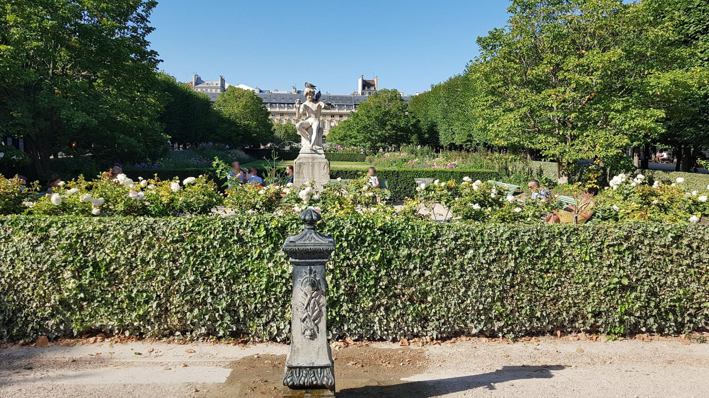

Париж,
который напечатали.
Две раскрашенные литографии, два городских пространства и один простой вопрос: что именно художник оставил нам о своём времени?
Обычно старую литографию рассматривают как открытку из прошлого. Узнали здание, полюбовались красками, пошли дальше. Но если задержаться, обнаружится гораздо больше: где стоял автор, кого он поместил на передний план, чьё имя указано под изображением и какие детали нельзя проверить по одному рисунку.
Пройдём по Парижу с двумя листами Филиппа Бенуа. Их хранит Библиотека Конгресса США. Мы будем читать изображения как свидетельства и каждый раз отделять то, что подтверждено музейной записью, от нашего собственного толкования.
Церковь, которая занимает весь лист.
Начнём с Мадлен. Перед нами массивный античный портик, лестница, колонны, фронтон. Художник показывает не нейтральный чертёж здания: он выбирает вид под углом, открывает боковую колоннаду и оставляет внизу пространство городской жизни.
Посмотрите, как сопоставлены человек и архитектура. Высокие колонны задают масштаб, а фигуры на улице помогают почувствовать размер сооружения. Здесь возникает сюжет: город торжественный, но не пустой.
За этим фасадом почти восемьдесят лет перемен. Первый камень Мадлен заложили в 1764 году; революционные события остановили строительство. В 1806 году Наполеон распорядился превратить проект в храм воинской славы, а в 1842 году завершённое здание освятили как церковь. Поэтому античные колонны на литографии говорят не только об архитектурном вкусе. Их история связана с тем, как менялись власть и назначение публичного пространства.
Эту хронологию подтверждает город Париж. Но она не доказывает, что именно думал Бенуа, когда выбирал ракурс.
Что мы видим: сам Париж или представление художника о Париже?

В Пале-Рояль взгляд меняется.
На другом листе Бенуа архитектура уже не давит на человека. Сад Пале-Рояль организует движение взгляда: деревья, аллеи, галереи и открытое пространство превращаются в композицию. Возникает ощущение прогулки, хотя перед нами всё ещё постановка художника.
Эта работа удобна для первого музейного вопроса: какая часть сцены относится к планировке сада, а какая к художественному решению? Дороги и фасады можно сопоставить с другими источниками. Жест конкретного прохожего или свет определённого часа по одной литографии доказать нельзя.
Пале-Рояль был местом прогулки и покупок задолго до этого листа. В конце XVIII века в его галереях работали лавки и места развлечения, а в 1789 году они стали и пространством политических встреч. У сада уже была история городской повседневности, когда Бенуа перенёс его на бумагу. Исторический маршрут города Парижа рассказывает об этом прошлом; он не устанавливает, как выглядел каждый прохожий в середине XIX века.

Кто на самом деле создал этот Париж?
Под историческим изображением часто есть строка, которая выглядит как мелкая типографская подробность. Но именно она меняет понимание произведения. Надпись Ph. Benoist del. сообщает о рисунке; Imp. Lemercier указывает на печатную мастерскую.
Между увиденным городом и листом, который оказался у читателя, была работа нескольких людей. Рисунок нужно было подготовить к печати, перенести в литографический процесс, получить оттиск. Экземпляры в Библиотеке Конгресса раскрашены вручную. Сам по себе цвет не позволяет называть их хромолитографиями.
Номера plate 6 и plate 8 подсказывают, что листы связаны с какой-то нумерованной публикацией. Но без подтверждённого титульного листа, издательского объявления или каталога мы не будем утверждать, что они непременно вышли в одном и том же издании.
Четыре уровня доверия к изображению.
История становится убедительнее, когда мы говорим не только о том, что знаем, но и о границах знания.
Архивная запись
Название, техника, номера листов, имена и диапазоны дат. Всё это проверяется в учреждении хранения.
То, что на листе
Фасады, деревья, люди, перспектива, светотень. Мы можем это рассмотреть, но видимое ещё не равняется документально точному.
Зачем это показано
Идеи о торжественности улицы или прогулочном характере сада. Это кураторское чтение, открытое для спора.
Чего не хватает
Точный ракурс, документ об издании, история конкретной раскраски. Неизвестное остаётся обозначенным как неизвестное.
То же место. Не тот же взгляд.
Современная фотография помогает прочитать историю, но не гарантирует, что камера и рисовальщик стояли в одной точке.

В старом саду направление взгляда ведёт к одним сооружениям, в современном кадре — к другим. Если просто наложить изображения, можно создать ложное впечатление, будто здание исчезло или переместилось. Для этого сравнения честнее оставить оба подлинных вида рядом.

Диапазон датировки двух листов Бенуа в Library of Congress. Это не точный год съёмки сцены.
Современный кадр сада Пале-Рояль из Panoramax с противоположного направления.
Современная фотография Мадлен. Ракурс отличается от исторического.